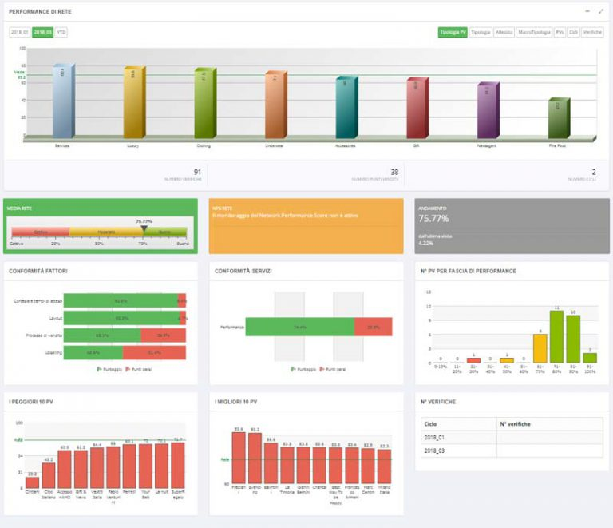

Mystery Software: la piattaforma di reportistica avanzata per mystery shopping
La tecnologia rappresenta il catalizzatore che trasforma i dati grezzi in intelligence strategica. La nostra piattaforma proprietaria Mystery Software integra algoritmi di machine learning e analytics predittive per processare e analizzare i flussi informativi provenienti da multiple touchpoint di raccolta dati.
Acquisizione dati multi-canale e processamento intelligente
Il sistema acquisisce informazioni attraverso diversi canali di input ottimizzati per specifici use case. I mystery client utilizzano applicazioni mobile native per la compilazione delle verifiche, garantendo data collection in tempo reale con geolocalizzazione automatica e timestamp certificati. I clienti finali interagiscono attraverso tablet point-of-sale o websurvey responsive, mentre i feedback spontanei vengono catturati attraverso sistemi di customer satisfaction integrati.
L'intelligenza artificiale analizza automaticamente i pattern comportamentali emergenti dai dati raccolti, identificando correlazioni non evidenti attraverso analisi tradizionali. Gli algoritmi di natural language processing processano i feedback testuali estraendo sentiment analysis e topic modeling per categorizzare automaticamente le criticità ricorrenti e le opportunità di improvement.
Reportistica avanzata e business intelligence

La piattaforma genera output multi-formato per diverse esigenze di fruizione: dashboard interattive per il monitoring real-time, report PDF executive-ready per la condivisione con stakeholder C-level, e dataset Excel per analisi approfondite da parte dei team analytics interni. Il sistema di visualizzazione dati utilizza chart dinamici e heatmap per facilitare l'identificazione immediata di trend e anomalie performance.
L'elemento distintivo della nostra soluzione è la capacità di generare un indice composito unico per ogni location o business unit, aggregando metriche provenienti da fonti eterogenee. Questo KPI sintetico consente di benchmarking standardizzato tra diverse tipologie di punti vendita e canali distributivi, fornendo una metrica universale per valutare l'experience quality complessiva.
Integrazione sistemica e scalabilità enterprise
Mystery Software è progettato per integrarsi seamlessly con l'ecosistema tecnologico aziendale esistente. Le API RESTful consentono la sincronizzazione bidirezionale con CRM, intranet aziendali e piattaforme di reportistica enterprise, eliminando silos informativi e garantendo data consistency across different systems.
La struttura modulare permette la configurazione di accessi gerarchici basati su geografia commerciale, dal livello country fino al singolo store, con permission management granulare per garantire data security e compliance normativa. L'architettura cloud-native assicura scalabilità orizzontale per gestire volumi crescenti di dati senza degradazione delle performance.
Customizzazione proprietaria e vantaggio competitivo
Il controllo completo del codice sorgente rappresenta il differenziale strategico fondamentale della nostra proposta tecnologica. Essendo Mystery Software una piattaforma proprietaria sviluppata interamente, possiamo implementare modifiche e personalizzazioni specifiche per ogni cliente senza i vincoli tipici delle soluzioni white-label o delle piattaforme SaaS standard del mercato.
Questa ownership tecnologica ci consente di sviluppare funzionalità custom, integrazioni dedicate e workflow personalizzati che si allineano perfettamente con i processi aziendali di ciascun cliente. Mentre i competitor operano con limitazioni imposte da fornitori terzi, noi possiamo rilasciare update e enhancement in tempi rapidi, garantendo un time-to-market superiore per nuove feature e un'agilità operativa ineguagliabile nel settore del mystery shopping. La nostra piattaforma proprietaria Mystery Software integra algoritmi di machine learning e analytics predittive per processare e analizzare i flussi informativi provenienti da multiple touchpoint di raccolta dati.
Acquisizione dati multi-canale e processamento intelligente
Il sistema acquisisce informazioni attraverso diversi canali di input ottimizzati per specifici use case. I mystery client utilizzano applicazioni mobile native per la compilazione delle verifiche, garantendo data collection in tempo reale con geolocalizzazione automatica e timestamp certificati. I clienti finali interagiscono attraverso tablet point-of-sale o websurvey responsive, mentre i feedback spontanei vengono catturati attraverso sistemi di customer satisfaction integrati.
L'intelligenza artificiale analizza automaticamente i pattern comportamentali emergenti dai dati raccolti, identificando correlazioni non evidenti attraverso analisi tradizionali. Gli algoritmi di natural language processing processano i feedback testuali estraendo sentiment analysis e topic modeling per categorizzare automaticamente le criticità ricorrenti e le opportunità di improvement.
Reportistica avanzata e business intelligence
La piattaforma genera output multi-formato per diverse esigenze di fruizione: dashboard interattive per il monitoring real-time, report PDF executive-ready per la condivisione con stakeholder C-level, e dataset Excel per analisi approfondite da parte dei team analytics interni. Il sistema di visualizzazione dati utilizza chart dinamici e heatmap per facilitare l'identificazione immediata di trend e anomalie performance.
L'elemento distintivo della nostra soluzione è la capacità di generare un indice composito unico per ogni location o business unit, aggregando metriche provenienti da fonti eterogenee. Questo KPI sintetico consente di benchmarking standardizzato tra diverse tipologie di punti vendita e canali distributivi, fornendo una metrica universale per valutare l'experience quality complessiva.
Integrazione sistemica e scalabilità enterprise
Mystery Software è progettato per integrarsi seamlessly con l'ecosistema tecnologico aziendale esistente. Le API RESTful consentono la sincronizzazione bidirezionale con CRM, intranet aziendali e piattaforme di reportistica enterprise, eliminando silos informativi e garantendo data consistency across different systems.
La struttura modulare permette la configurazione di accessi gerarchici basati su geografia commerciale, dal livello country fino al singolo store, con permission management granulare per garantire data security e compliance normativa. L'architettura cloud-native assicura scalabilità orizzontale per gestire volumi crescenti di dati senza degradazione delle performance.
Customizzazione proprietaria e vantaggio competitivo
Il controllo completo del codice sorgente rappresenta il differenziale strategico fondamentale della nostra proposta tecnologica. Essendo Mystery Software una piattaforma proprietaria sviluppata interamente, possiamo implementare modifiche e personalizzazioni specifiche per ogni cliente senza i vincoli tipici delle soluzioni white-label o delle piattaforme SaaS standard del mercato.
Questa ownership tecnologica ci consente di sviluppare funzionalità custom, integrazioni dedicate e workflow personalizzati che si allineano perfettamente con i processi aziendali specifici di ciascun cliente. Mentre i competitor operano con limitazioni imposte da fornitori terzi, noi possiamo rilasciare update e enhancement in tempi rapidi, garantendo un time-to-market superiore per nuove feature e un'agilità operativa ineguagliabile nel settore del mystery shopping.
È una piattaforma web appositamente sviluppata per indagini di tipo mystery e consente di inserire i dati direttamente da dispositivi mobili (ove possibile) e allegare foto, preventivi ed altri file digitali, la piattaforma acquisisce automaticamente data e ora certi oltre che il posizionamento satellitare.
È in grado di collegarsi con CRM, intranet aziendali e altre piattaforme di reportistica interne per scambio dati e permette l'accesso ai clienti organizzato per aree commerciali dai singoli stati al singolo punto vendita.
Vengono ideati report personalizzati per ogni cliente per mostrare i risultati delle indagini in maniera efficiente. Dal report in PowerPoint per la presentazione alla convention aziendale ai report per singola verifica passando per report più complessi in Spss ed Excel.
Il sistema genera in automatico i report successivi ad ogni singola verifica in formato PDF o Excel.